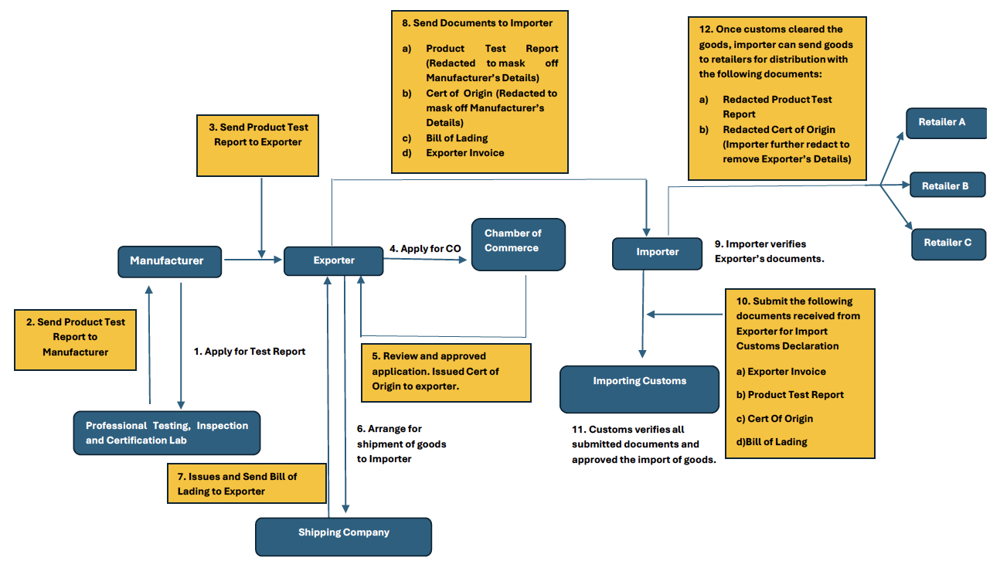

Exchange of Electronic Certificate of Origin
Background
This use case has been provided by International Chamber of Commerce.
An Exporter sources and buys products from a Manufacturer for export to a destination country. At the
destination country, the Importer, who is the Exporter's customer in turn distributes the products to many
retailers in the destination country.
To clear Customs at the destination country, the Importer may require the following documents from the
Exporter to be presented:
- Exporter's Invoice
- Bill of Lading issued by shipping company
- Certificate of Origin issued by an authorised issuing authority (e.g., a Chamber of Commerce)
- Product Test Report issued by a testing laboratory from manufacturer
Selective Redaction is used in a lossy manner to mask sensitive information that the upstream party does not
want to share with downstream parties. For example, the Exporter may redact the manufacturer's details from
the Product Test Report and Certificate of Origin before sending the report to the Importer. The Importer may
further redact the Exporter's details from the Certificate of Origin when sharing copies of the certificate
with its retailers.
Note: The scenario above is highly simplified and the list of documents is not exhaustive. It is
included solely for the purpose of illustrating this use case for Selective Redaction.]

Roles in Cross Border Trade
Roles in the above diagram are in blue.
Professional Testing, Inspection, and Certification Lab
- Responsible for inspecting, testing, and certifying the products to ensure they meet quality and safety
standards.
Manufacturer
- The company that produces and supplies the products.
Exporter
- The company that sells and exports the products to the Importer.
Chamber of Commerce
- An organisation authorised to issue the Certificate of Origin, attesting the origin of the goods.
Importing Customs
- The governmental body in importing country that validates the Certificate of Origin and review mandatory
documents to ensure the goods comply with import regulations.
Importer
- The company that purchases and imports the goods from the Exporter.
Shipping Company
- A company that transports goods internationally, facilitating import and export operations.
Retailers
- Businesses that distribute goods to consumers after they are imported and cleared through customs.
Trade Flow
- The Manufacturer requests a product test report from a professional testing lab to certify that their goods
meet the required safety and quality standards.
- The Test Lab sends the product test report to Manufacturer upon completion of testing.
- Manufacturer sends the Product Test Report to Exporter.
- Exporter submit the necessary documents to Chamber of Commerce to apply for the Cert of Origin.
- The Chamber of Commerce (Issuer) will review, approve, and issue Certificate of Origin (Subject) to the
exporter, certifying the product's origin.
- The Exporter arranges shipment of goods with the Shipping Company.
- The Shipping Company issues a Bill of Lading to the Exporter for claiming goods in the importing
country.
- The Exporter (Recipient) sends the redacted Certificate of Origin (redacting the Manufacturer Details), a
Bill of Lading, Exporter Invoice and a redacted Product Test Report (redacting the Manufacturer Details) to
the importer.
- It is essential for the Exporter to provide the Importer with the Cert of Origin, Bill of Lading,
Exporter Invoice, and Product Test Report for the Import Customs Declaration, as this helps
facilitate faster cargo clearance and approval for importing goods.
- The Exporter has the option to redact commercially sensitive information, such as the manufacturer's
details or pricing, to prevent the importer from bypassing him for future business.
- The Importer (Recipient/Verifier) will verify the Certificate of Origin (CO) to authenticate the document
and review the remaining documents to prepare for the Import Declaration.
- The CO provides a link to the issuer, which is crucial for verifying that the issuer is a recognized
authority and ensuring the authenticity of the document.
- The Importer submits the Import Declaration, redacted Cert of Origin, Bill of Lading, Exporter Invoice, and
redacted Product Test Report to Import Customs.
- Import Customs (Verifier) verifies the CO and reviews the other supporting documents to ensure the imported
goods meet their importing regulations.
- Customs authorities primarily focus on verifying the authenticity of the CO, and essential
information provided such as product details, quality, and safety report. The redacted documentation
(which redacts the Manufacturer's name and pricing) will still meet Customs' requirements.
- After clearance by the Import Customs, the Importer can distribute the goods to retailers, providing the
redacted Product Test Report and a further-redacted Cert of Origin (with Exporter details redacted).
Actors
Issuer
- The Issuer is typically the Issuing Authority in the exporting country. These authorities are responsible
for issuing the CO, which attests to the origin of the goods. The issuer plays a key role in validating that
the goods comply with the necessary requirements for certification.
Subject
- The Subject of the CO is the certificate itself, which confirms that the goods being exported originate from
a specific country. The CO serves as proof of origin, which is used by importers to claim tariff exemptions,
demonstrate compliance with trade agreements like Free Trade Agreements (FTAs) or to meet the importing
regulations.
Verifier
- The Verifier is the party responsible for validating the authenticity of the CO. In the importing country,
the Customs Authority will typically verify the CO during the importation process. Banks may also act as
verifiers in situations where trade financing is involved, especially when using instruments like a Letter
of Credit (L/C). Additionally, the importer themselves may verify the CO to ensure that the goods originated
from the country they expect.
Recipient
- The Recipient of the CO could be the Importer (and/or their appointed customs broker), who presents it to
the importing country's Customs Authority during import clearance to secure tariff exemptions or to
facilitate cargo clearance. In some cases, the CO may also be verified by the Exporter or by Banks,
particularly when it is used in trade financing arrangements.